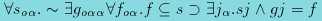
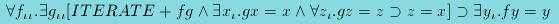
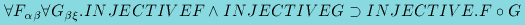
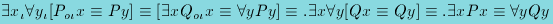

Examples of TPS Automatic Proofs
These examples date from 1996; more recent examples are available in our papers.
X5305 is Cantor's Theorem; it says that there is no mapping
g from a set s onto its power set:

TPS finds the diagonal argument without any prior knowledge, and proves the theorem in under half a second, before
translating the proof into a natural deduction format (which takes an additional one and a half seconds). Total time:
2.05 seconds.
THM15B states that if g is an iterate of f, and g
has a unique fixed point, then
f has a fixed point:

TPS independently decides to prove a lemma stating that all iterates of a function commute with the function, and then
proves the theorem from that.
The JAR paper discusses this theorem in some detail; recent improvements in the
unification procedures have reduced the time taken to prove this theorem from 2.5 hours (at the time of writing the
paper) to 52 seconds, plus approximately five seconds to translate the proof into natural deduction style.
THM48 states that the composition of injective functions is injective:

The equalities which are contained in the definition of INJECTIVE are not actually needed for the proof, and the time
taken to prove this theorem depends on whether the equalities are instantiated or not. If they are instantiated, the
search for a proof takes 90 seconds; if not, the proof can be found in 0.05 seconds. The time required for translation
into natural deduction format is approximately one second in either case.
X2129 is a challenge problem presented by Andrews at the Fourth Workshop on
Automated Deduction in 1979:

TPS found a refutation proof for this problem in 0.14 seconds, using path-focused duplication. The merging (see the
manuals for a description of merging) and translation processes then took about 70 seconds
to transform the proof into natural deduction style.